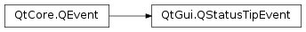

QStatusTipEvent¶
Detailed Description¶
The
PySide2.QtGui.QStatusTipEventclass provides an event that is used to show messages in a status bar.Status tips can be set on a widget using the
QWidget.setStatusTip()function. They are shown in the status bar when the mouse cursor enters the widget. For example:

Status tips can also be set on actions using the
QAction.setStatusTip()function:

Finally, status tips are supported for the item view classes through the
Qt.StatusTipRoleenum value.
-
class
PySide2.QtGui.QStatusTipEvent(tip)¶ Parameters: tip – unicode Constructs a status tip event with the text specified by
tip.See also
-
PySide2.QtGui.QStatusTipEvent.tip()¶ Return type: unicode Returns the message to show in the status bar.
See also
QStatusBar.showMessage()
© 2018 The Qt Company Ltd. Documentation contributions included herein are the copyrights of their respective owners. The documentation provided herein is licensed under the terms of the GNU Free Documentation License version 1.3 as published by the Free Software Foundation. Qt and respective logos are trademarks of The Qt Company Ltd. in Finland and/or other countries worldwide. All other trademarks are property of their respective owners.